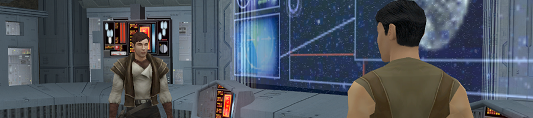
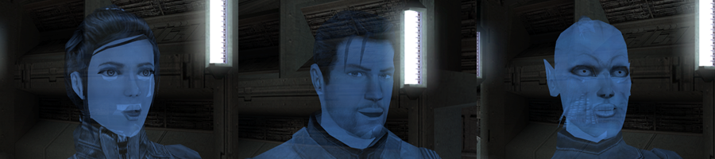
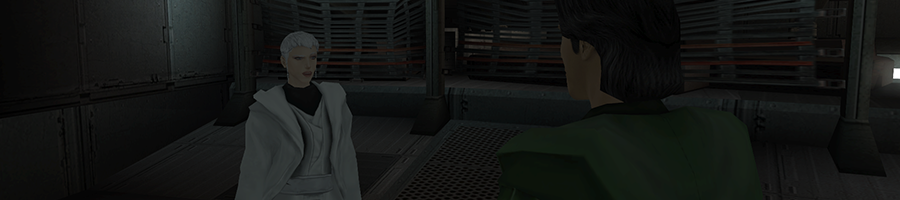
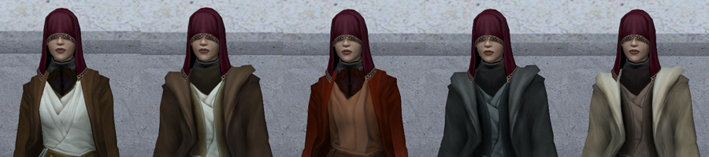
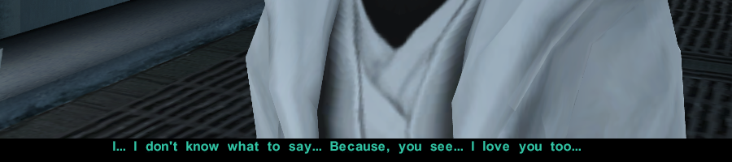
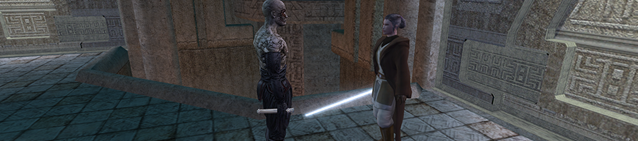
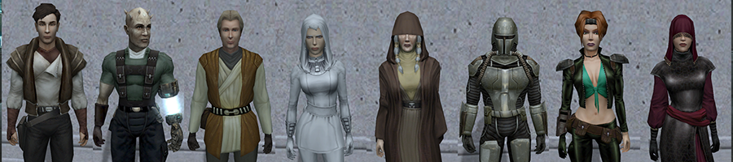
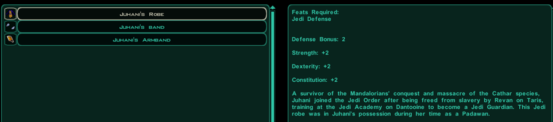
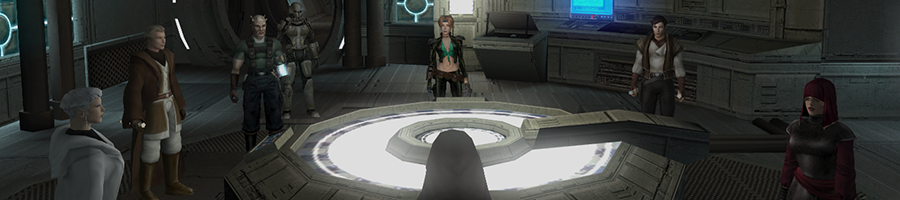
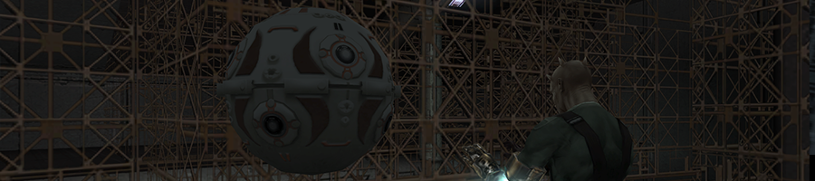

My Mods for Star Wars: Knights of the Old Republic II: The Sith Lords
Categories:
Same-Gender Romances
↓↓READ THIS↓↓ before asking questions about my romance mods!
Frequently Asked Questions (FAQ) for My Same-Gender Romance Mods for KotOR II
Atton Rand and Male Exile Romance
Makes Atton flirts with and expresses romantic interests for male Exiles.
Handmaiden and Female Exile - Disciple and Male Exile Romance
Makes the Handmaiden a romance option for female Exiles and the Disciple a romance option for male Exiles.
Alternate Revan Romances REDUX
Gives players options to set Revan's love ineterest(s), or lack thereof. Updated version of felixfelicitas' Alternate Revan Romances mod.
Party Members

No Jealousy Lock in Handmaiden Dialogue
Allows you to continue to talk to Handmaiden even if you have much higher influence with Visas than with Handmaiden.
Visas Visible Jedi Robes
Makes Jedi robes visible on Visas Marr's body when you equip her with one.
Love Between Brianna and the Exile - The Sith Lords Restored Content Mod Version
Updated version of DarthShgaad's Love Between Brianna and the Exile mod, made to be more compatible with The Sith Lords Restored Content Mod (TSLRCM).
NPCs
Lonna Vash Mod for TSLRCM
Restores Jedi Master Lonna Vash's cut conversation by allowing the player to meet and talk to her in the secret tomb on Korriban. Updated version of Sikon's Lonna Vash Mod, made to be fully compatible with The Sith Lord Restored Content Mod (TSLRCM).
Items
TSL Improved Party Outfits
Adds new items to improve the properties of the default outfits of the human and humanoid party members of KotOR II, namely Atton, Bao-Dur, the Disciple, the Handmaiden, Kreia, Mandalore, Mira and Visas.
Juhani Item Pack for TSL
Adds a new Jedi robe, a new headband and a new armband to In KotOR II: TSL, named after Juhani, with item descriptions that indicate these items once belonged to Juhani.
Miscellaneous
Patches
PartySwap and Extended Enclave Compatibility Patch
A standalone patch to make DarthTyren's PartySwap mod compatible with danil-ch and Darth Hayze's Extended Enclave mod.
Remote Tells Influence Patch for The Sith Lords Restored Content Mod
A patch to make tk102's Remote Tells Influence mod more compatible with The Sith Lords Restored Content Mod (TSLRCM).